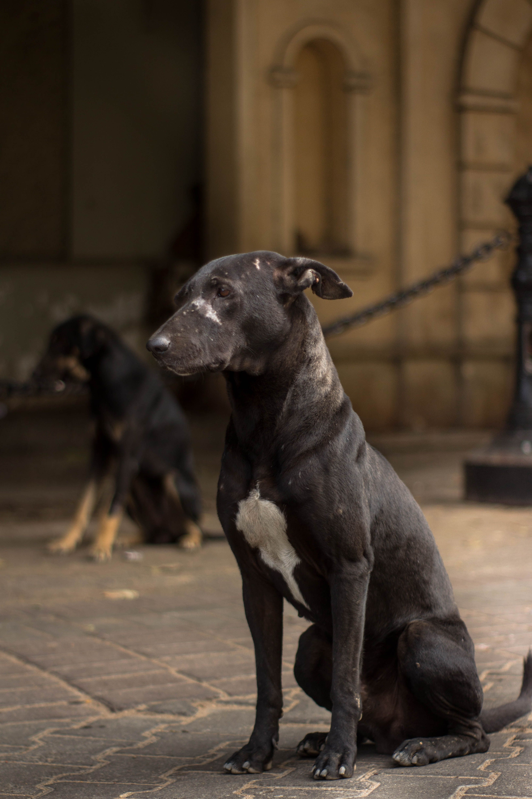
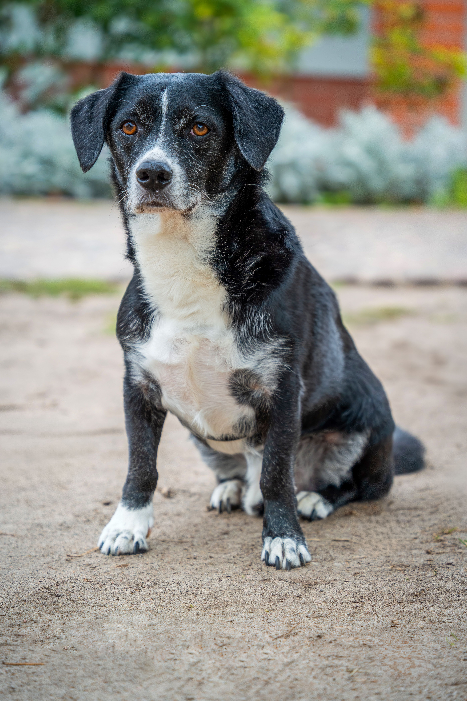
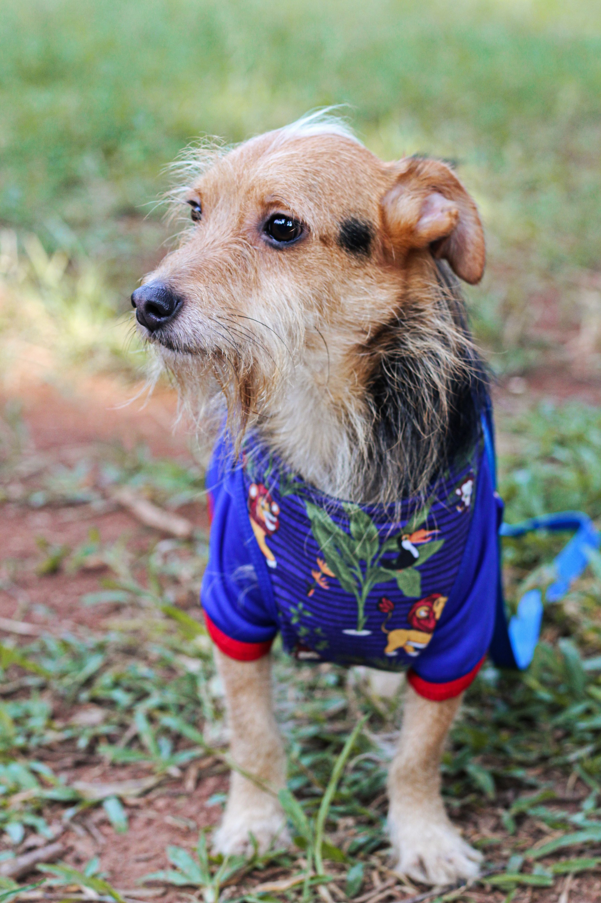
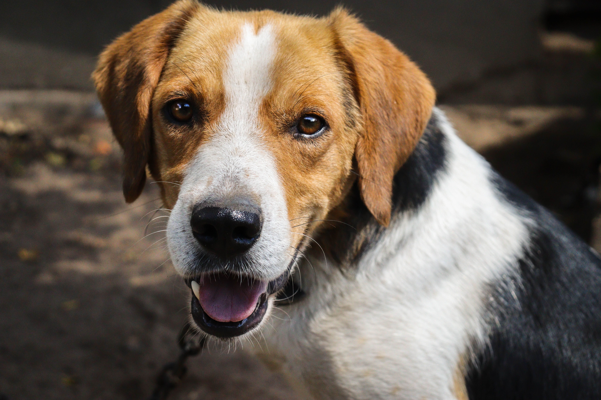

Rescate y Rehabilitación
En Patitas Felices rescatamos perros en situación de abandono,
maltrato o riesgo. Nuestro equipo les brinda atención veterinaria,
alimentación y cuidados para que puedan recuperarse física y
emocionalmente.
¿A quién está dirigido?
A perros que necesitan ayuda inmediata y protección.
¿Cómo participar?
Si conocés un animal que necesite ayuda o querés colaborar con
esta iniciativa, podés comunicarte con nosotros a través de la
página de Contacto
Adopción Responsable
Buscamos hogares comprometidos para nuestros perros rescatados,
asegurándonos de que cada adopción sea segura y permanente.
¿A quién está dirigido?
A personas y familias interesadas en adoptar una mascota.
¿Cómo participar?
Completando el formulario de adopción y siguiendo el proceso de evaluación.
Proceso de adopción
- Completar el formulario de adopción.
- Entrevista con nuestro equipo.
- Evaluación del hogar.
- Entrega responsable de la mascota.
Perros en adopción
| Foto |
Nombre |
Edad |
Tamaño |
 |
Max |
3 años |
Grande |
 |
Luna |
2 años |
Mediano |
 |
Coco |
4 años |
Pequeño |
 |
Canela |
1 año |
Mediano |
Educación y Comunidad
Promovemos la tenencia responsable de mascotas mediante campañas,
charlas y actividades comunitarias que fomentan el respeto y el
cuidado de los animales.
¿A quién está dirigido?
A estudiantes, vecinos y todas las personas interesadas en el bienestar animal.
¿Cómo participar?
Sumándote como voluntario o participando en nuestras actividades y campañas.